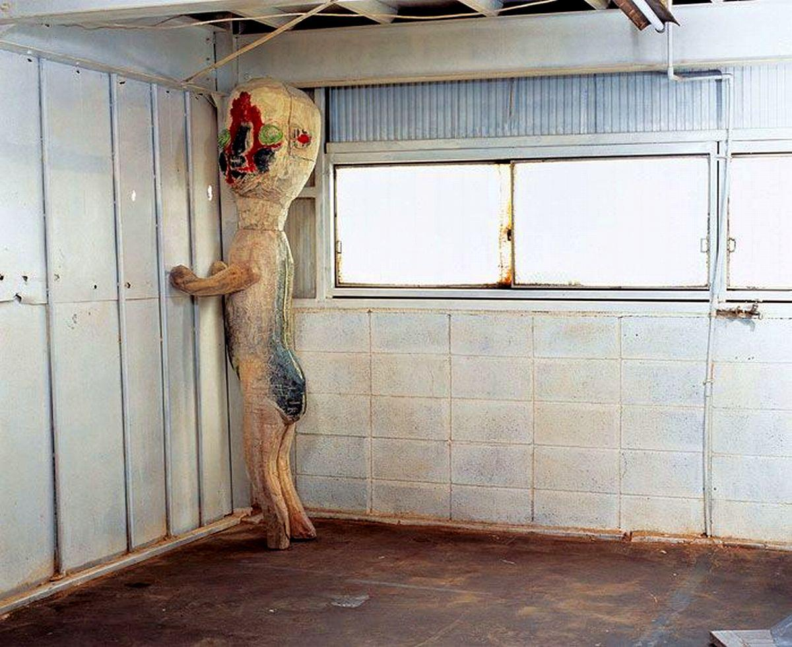
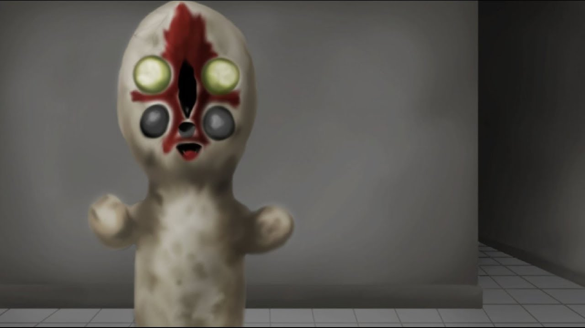

SCP-173
項目等級：Euclid
特殊收容措施：項目SCP-173應始終保管於一個上鎖的收容間內。當必須進入SCP-173的收容間時，人員數目不論何時都不得少於三人且須將門重新上鎖。至少須有兩人全程與SCP-173保持眼神接觸，直到所有人員都離開收容間並重新上鎖為止。
描述：於1993年移動到Site-19。起源至今未知。它由混凝土和鋼筋建造，並有Krylon牌噴漆的痕跡。 SCP-173擁有生命且具有高度敵意。該物體在直接視線內無法移動。與SCP-173之間的視線時刻都不得中斷。派往收容間的人員要在眨眼前相互提醒。據報告該物體的攻擊方式為折斷頭骨底處的頸部，或是勒頸。在一起攻擊事件中，人員應遵守4級危險物體收容措施。
人事報告稱，當收容間內無人存在時，其中會傳出刮石的聲音。這被認為是正常現象，並且該行為所發生的任何改變都應當向值班中的代理HMCL監督員報告。
地板上的紅棕色物質為糞便和血液的混合物。這些物料的來源未知。內部環境須每兩周清潔一次。


SCP-173中所使用的圖像為加藤泉所創作的藝術作品《無題 2004》。該照片由山本桂輔所攝。原作者保留所有權利。
提醒：SCP-173是對由加藤泉所創作的藝術作品《無題 2004》的二次使用。 SCP-173的概念與該藝術家的《無題 2004》的原始概念沒有任何關係。
該雕塑，及其外形、照片都不適用於任何知識共享許可。僅有該文章的文本部分適用於知識共享。任何情況下都不得將該雕塑及其外形基於商業目的使用。加藤泉已慷慨地允許SCP基金會及其愛好者團體基於非商業目的使用《無題 2004》的圖像。